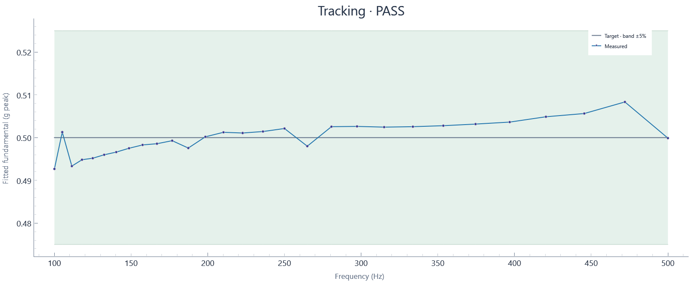

2026-10-29T22:34:03.029664-04:00 · Hardware · Setup 75f4f2525b24
Run: complete · 127 blocks · 127.35 wall seconds · 127.00 sample seconds
Tracking tolerance: ±5%

| Hz | Target g peak | Settled g peak | Error % | Raw transient peak g | Result |
|---|---|---|---|---|---|
| 500 | 0.5 | 0.49988 | -0.023 | 0.61738 | PASS |
| 471.94 | 0.5 | 0.50834 | +1.669 | 0.55785 | PASS |
| 445.45 | 0.5 | 0.50564 | +1.128 | 0.55711 | PASS |
| 420.45 | 0.5 | 0.50488 | +0.976 | 0.54773 | PASS |
| 396.85 | 0.5 | 0.50364 | +0.727 | 0.55044 | PASS |
| 374.58 | 0.5 | 0.50317 | +0.634 | 0.55242 | PASS |
| 353.55 | 0.5 | 0.50279 | +0.558 | 0.65591 | PASS |
| 333.71 | 0.5 | 0.50256 | +0.512 | 0.54464 | PASS |
| 314.98 | 0.5 | 0.50246 | +0.492 | 0.54476 | PASS |
| 297.3 | 0.5 | 0.50263 | +0.525 | 0.54995 | PASS |
| 280.62 | 0.5 | 0.50256 | +0.512 | 0.56205 | PASS |
| 264.87 | 0.5 | 0.498 | -0.400 | 0.54217 | PASS |
| 250 | 0.5 | 0.50213 | +0.427 | 0.55118 | PASS |
| 235.97 | 0.5 | 0.50143 | +0.286 | 0.54773 | PASS |
| 222.72 | 0.5 | 0.50108 | +0.216 | 0.54365 | PASS |
| 210.22 | 0.5 | 0.50125 | +0.249 | 0.54933 | PASS |
| 198.43 | 0.5 | 0.50019 | +0.038 | 0.54674 | PASS |
| 187.29 | 0.5 | 0.49756 | -0.487 | 0.54093 | PASS |
| 176.78 | 0.5 | 0.49928 | -0.143 | 0.54958 | PASS |
| 166.85 | 0.5 | 0.49858 | -0.285 | 0.54167 | PASS |
| 157.49 | 0.5 | 0.49829 | -0.342 | 0.54316 | PASS |
| 148.65 | 0.5 | 0.49751 | -0.497 | 0.54217 | PASS |
| 140.31 | 0.5 | 0.49661 | -0.678 | 0.53883 | PASS |
| 132.43 | 0.5 | 0.49598 | -0.803 | 0.54377 | PASS |
| 125 | 0.5 | 0.49518 | -0.964 | 0.54081 | PASS |
| 117.98 | 0.5 | 0.49483 | -1.034 | 0.54192 | PASS |
| 111.36 | 0.5 | 0.49334 | -1.332 | 0.5455 | PASS |
| 105.11 | 0.5 | 0.50129 | +0.258 | 0.54254 | PASS |
| 100 | 0.5 | 0.49267 | -1.465 | 0.55118 | PASS |
Tracking assessment against configured tolerance, separate from run completion. Sine uses the last settling-window blocks at each dwell; transient raw peaks are reported separately. Random excludes startup/ramp and the initial settling interval; all subsequent full-target blocks are evaluated.
Raw peak means the largest absolute acquired sample; it differs from fitted sine amplitude and RMS.
Calibration: 2026-10-29 current shaker/amp/load; NI USB-4431 Dev1 ai0, 10 mV/g, 2.1 mA IEPE. Last-block tone fit at 0.5 g-peak nominal from 02b82812; revalidate after setup changes.
Input: Dev1/ai0: Acceleration input in g (2.1 mA IEPE)
Clocks: Independent AI/AO clocks configured